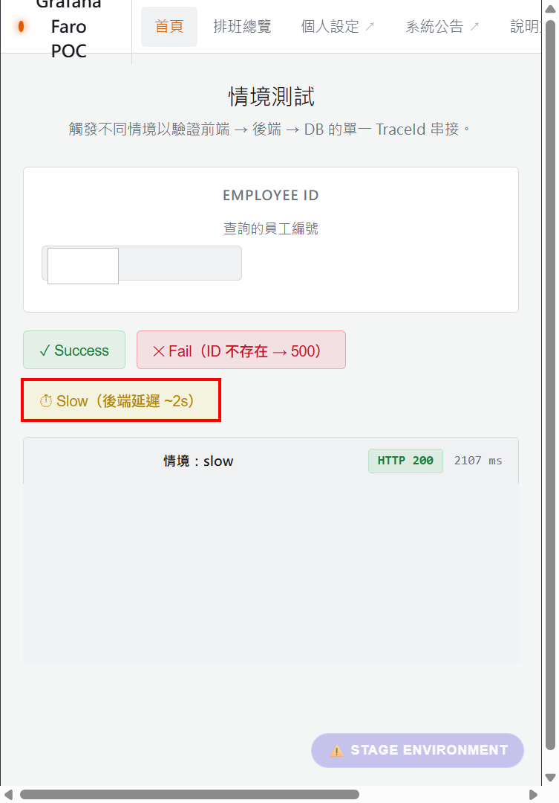
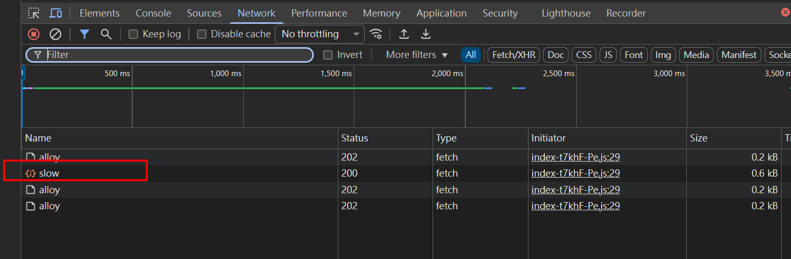
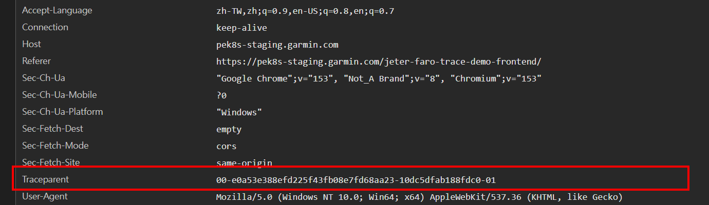
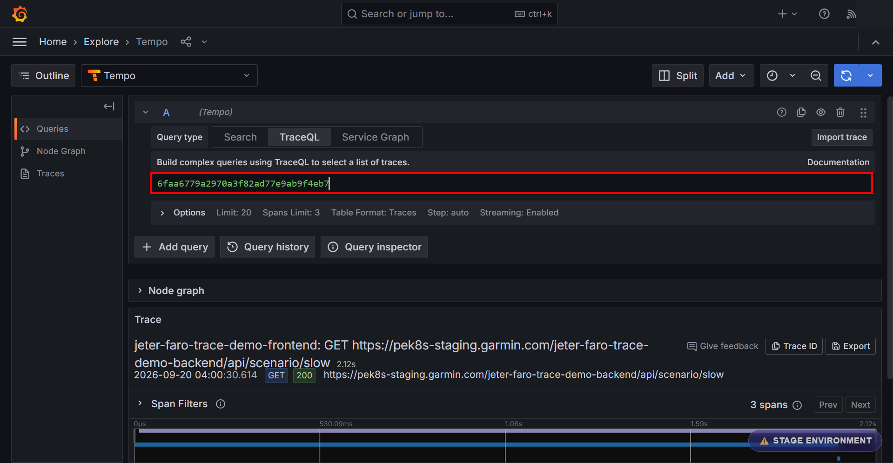
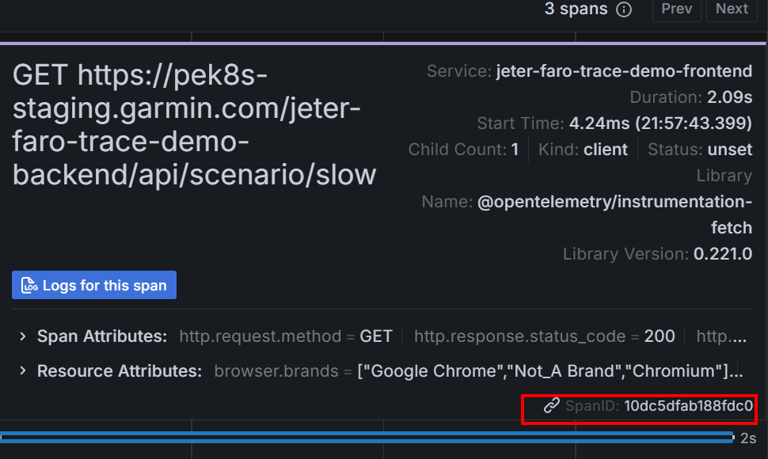
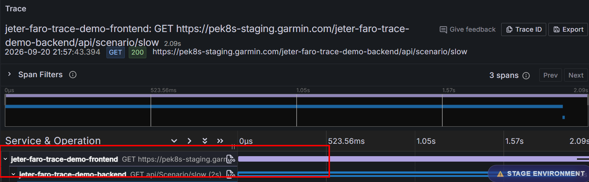

Milestone 4 · 固定一筆 Request，用相同的 ID 證明跨 Runtime 關係
Lesson 7 已解釋為什麼不同 runtime 需要傳遞 context。這次只處理一個可驗收的問題：不是「兩邊都有 trace」，而是「這一筆 request 的兩邊是否真的接起來」。
T = 整條 trace 的 ID
A = Browser HTTP span 的 ID
B = Backend HTTP span 的 ID
Browser outgoing traceparent = 00-T-A-...
│ Backend 成功接續，且沒有中間已插樁的 span
▼
Backend span B
traceId = T
parentSpanId = A
spanId = B（不是重用 A）有 gateway／proxy spans 時，要驗證它們組成的 parent chain，不要求最末 backend 的直接 parent 一定是 A。成功判準是資料中的關係符合實際呼叫鏈，而不是強迫每個部署都畫成只有兩個 spans。
| 觀察 | 最多支持的結論 |
|---|---|
| Business API 回 2xx。 | 這筆業務呼叫回覆成功，不代表 tracing 成功。 |
| Request 有 traceparent。 | Browser 送出了 context，不保證後端接續或 span 可查。 |
| Frontend span 在 Tempo 可查。 | 這筆 frontend 資料此時可查，不保證後端 parent 正確。 |
| UI tree 呈現上下層。 | 可看關係概貌；精確驗收再核對 raw trace/span/parent IDs。 |
先開 DevTools Network，保留所需 log，再執行已核准的測試。Preserve log 幫助保留後續導覽的記錄，不會補回開啟 DevTools 前沒錄到的 request。
以下沿用 repo 已保存的 2026-09-20 Jeter Slow request。截圖、header 與 Tempo projection 屬於同一筆歷史案例；不是本次新拍的畫面，也不保證它今天仍在 retention 內。


GET /jeter-faro-trace-demo-backend/api/scenario/slow
HTTP 200Jeter exact correlation evidence、已保存的視覺證據。

traceparent:
00-e0a53e388efd225f43fb08e7fd68aa23-10dc5dfab188fdc0-01
T = e0a53e388efd225f43fb08e7fd68aa23
A = 10dc5dfab188fdc0A 對 Browser 是這個 span 的 spanId；在 header 裡叫 parent-id，供下游作為 remote parent。01 表示 sampled bit 已設定，不是 Tempo 寫入保證。忘記四個欄位時先查 Traceparent Reference。
需要核對 Browser SDK 送出了什麼時，再找 /alloy 的 events[].trace 與 traces 內的 span，按 T/A 比較；不要按 POST 的排列順序配對。前者是 event 關聯，後者是完整 span，詳見 Payload Reference。

查到整條 trace 後，找 frontend span A，再檢查 backend server span。Browser 的 payload 通常不包含後端獨立匯出的 span；這一步不能只在 Browser 完成。
同一筆歷史 Jeter trace
Browser header
trace-id = e0a53e388efd225f43fb08e7fd68aa23
parent-id = 10dc5dfab188fdc0
Tempo frontend span
traceId = e0a53e388efd225f43fb08e7fd68aa23
spanId = 10dc5dfab188fdc0
Tempo backend span
traceId = e0a53e388efd225f43fb08e7fd68aa23
spanId = ceb5e675fed3017a
parentSpanId = 10dc5dfab188fdc0
Header.trace-id = Frontend.traceId = Backend.traceId
Header.parent-id = Frontend.spanId
Backend.parentSpanId = Frontend.spanId
↑ 此案例是直接接續直接核對資料：保存的 Tempo trace projection；解讀範圍：runtime evidence。

若 raw JSON 的 ID 表示法不同，先辨認是否為 hex 或 Base64 bytes，再統一表示法。不是每種 Tempo／OTLP JSON 都相同。具體的 IDP Base64 ↔ hex 對照與版本限制見 原始資料 Reference。
跨服務不一定是跨前後端。先看 span 所屬的 Resource（描述資料來源的共同屬性），確認 service、runtime 與已知部署，再看 instrumentation scope 與 parent chain。
Browser service + browser runtime / webjs / Faro
│ HTTP CLIENT span 送出 request
▼
Backend service + 後端 runtime / server instrumentation
│ HTTP SERVER span 接續處理
▼
後端還可能建立 CLIENT span，呼叫另一個 SERVERCLIENT 不等於 frontend，顏色也不是前後端分類。在上面的交界，Browser 是 CLIENT、API 是 SERVER；再往下遇到 CLIENT，可能只是後端向外呼叫。以顏色或 kind 單一欄位切分，會把 IAM Topology 這類下游服務看錯。
欄位位置與歷史 IDP 值的對照見 Runtime／scope 判讀表。這份對照來自上傳對話的歷史報告；本課 Jeter 的真實截圖仍只用來支持它實際顯示的內容。
Faro tracing 初始化從 app.name 建立 OTel Resource 的 service.name，再交給 WebTracerProvider；它不放在 traceparent 裡。一般保留傳入的大小寫與標點，明確的低階 resourceAttributes override 則另當別論。這不是叫應用繞過內部 SDK 自行設定另一套 provider。
initFaro({ app: { name: "idp-portal" }, ... })
│ Faro tracing 初始化建立 Resource
▼
Frontend Resource: service.name = "idp-portal"
traceparent = trace identity / parent context
Dashboard Job = 另外維護的查詢入口不要把不同日期的案例混在一起：2026-10-05 evidence 的 lowercase idp-portal 與 Dashboard IDP-Portal 不符；2026-10-22 匯出的對話則報告較後一次操作使用 IDP-Portal。這是兩份有日期的 evidence，不是互相覆寫，也不能由此宣稱今天的部署名稱。
逐行 Resource 建立與 override 順序、PR #37 的 source evidence、10/05 historical case。
| 觀察 | 下一步 |
|---|---|
| Browser 沒錄到當時的 header。 | 用有界時間、service、method、URL 找候選；不要把候選關聯寫成已直接觀察 outgoing header。 |
| 當前 request 沒有 traceparent。 | 核對實際載入 bundle、初始化、HTTP 機制、propagation 範圍與 pause／sampling 相關設定。 |
| 有 header，但 frontend span 不可查。 | 檢查記錄／匯出、/alloy delivery、下游與 retention；header 或 01 不保證可查。 |
| 有 frontend，但 backend 關係不符。 | 先排除中間 spans，再核對傳輸、extraction、後端設定與資料是否完整。 |
| Exact trace 可查，但 Dashboard 沒結果。 | 核對 service.name／Job、時間、method、URL、duration 單位、namespace 與 panel query；不先改 tracing 程式。 |
| 重載分頁後成功。 | 先驗證新舊 runtime 差異；使用者回報支持這個方向，不等於已唯一證明根因。 |
已保存的 IDP creation case 可用時間與 request 特徵找到候選，但未保留原 outgoing header；唯讀 reload case 則有更完整的 exact correlation。兩者可以各自支持分析，報告的確定程度必須不同。
遇到跨來源 header 被 Browser 擋下時，回查 實際 method／headers 的 CORS 契約；不要以 /alloy 的允許設定代替 business API 的設定。
練習時請先提出你能支持的結論，再列出還缺的那個欄位；教學 agent 可以用同一組 evidence 協助檢查，不需要重播有副作用的操作。